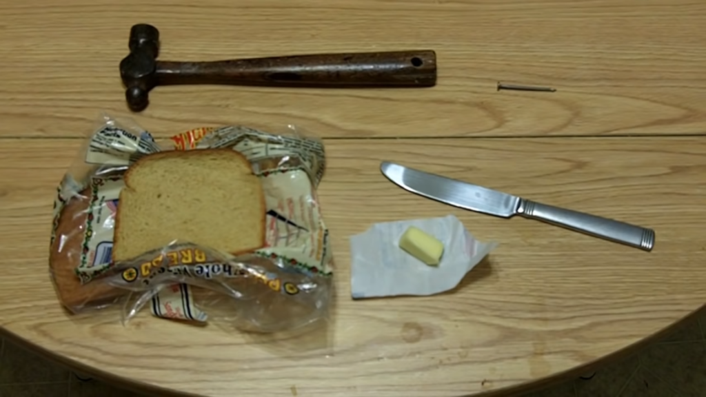

What is the Canonn method I hear you ask? Well, it is nothing more than the scientific method that underpins all good science. That and gallons of gin and mountains of biscuits.
The scientific method is a process for designing experimentation that helps us to unravel the secrets of the galaxy.
The overall process involves making hypotheses, deriving predictions from them as logical consequences, and then carrying out experiments based on those predictions to determine whether the original hypothesis was correct.
The steps are not strictly formulaic, It is true that great scientific advances can be made by just sitting in a bath and having an apple drop on your head but here at Canonn we think that this is the best approach. The Canonn method… not sitting in a bath.
All great scientific discoveries start with a great question, like “Who would win in a fight? A lion or a shark with lasers?” The question is usually prompted by observations from the real world. For instance in the 20th Century people had observed that toast always lands butter side down and that cats always land on their feet. This prompted the question, “What would happen if you put buttered toast on a cat’s back and dropped it?”
We would like to encourage you to do a bit of background research before you run off and start working on your great thesis. Check canonn.science to see if anyone else has done any work in the same area, talk to other members on our discord and search the galweb. For instance I managed to find an ancient archive of 21st century films showing actual cat-toast experiments. Fascinating.
A hypothesis is an educated guess about how things work. It is an attempt to answer your question with an explanation that can be tested. A good hypothesis allows you to then make a prediction. For instance:
If I put buttered toast on a cat’s back and then drop them, then the cat and toast will spin in mid air.
When you document your great discovery you should state both your hypothesis and the resulting prediction you will be testing.
A good hypothesis should also be falsifiable in other words there should be an outcome that proves the hypothesis to be incorrect.
Your experiment tests whether your prediction is accurate and thus your hypothesis is supported or not. In Canonn most of our experiments involve a great deal of data gathering, whether that is calculating AX weapon damage against thargoids or calculating when two orbiting bodies will collide. You should take multiple measurements so that you can identify and quantify errors.
Often there will be more data than can be collected by a single commander so you should be careful to document your data collection methodology, so that the data collection can be conducted by your peers. The galaxy is bigger than you can imagine and you will need help from other members.
Documenting your methodology is important or people trying to replicate your experiment may well come to the wrong conclusions.
For instance if you don’t specify how to attach the toast to the cat, someone may attempt to do it with a hammer and nails.

Once you have gathered your data you need to analyse it and see whether it supports your hypothesis or not. The data from your experimentation may lead you to ask new questions and form new hypotheses and so the process can begin anew.
Now I know that it is upsetting when the data does not support your hypothesis given that you have invested so much in it, but your negative results are just as useful as your positive results but not if you keep them to yourself. So that brings us to the final section.
We would dearly love to have your experiment documented on the canonn.science website whether your hypothesis was proven or not. This will give our scientists the opportunity to reproduce your results and provide additional supporting data.
Successful papers will communicate clearly the hypothesis, experimental methodology, data and conclusions.
We have had a number of scientists adopt the rather bizarre affection that they are players in some kind of simulation. Such papers will be rejected. We expect our scientists to be grounded in the real galaxy. Well not literally grounded. I think you know what I’m getting at.
Good luck with your work and I look forward to reading your papers.